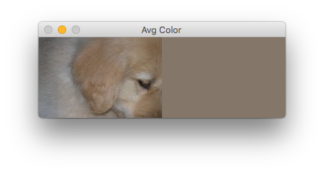
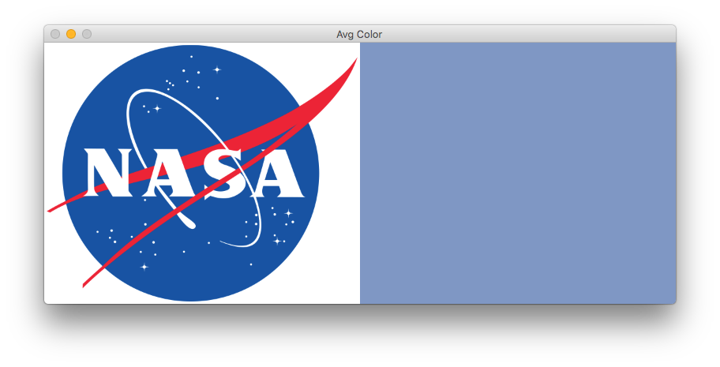

Finding the dominant color
Posted on Tue 10 July 2018 in OpenCV
A common way to isolate or find an object in an image is to look for its color. You specify a range of colors, then use OpenCV to identify regions in an image that contain colors within that range. But, even if you know the exact color of your target, lighting, shadows, and your camera's sensor will alter the detected color. So, how do you best determine the color range to use?
In this article, I'll explore some different methods to work with colors. By the end, I'll show you how to select a region of interest within an image, then get the exact range of colors needed to isolate that object in a live video stream.
Let's say your goal is to isolate the puppy in this image. You'll notice that his fur color varies between an off-white to a golden tan. The toy he has is only a bit darker red-brown.
Your first attempt might be to take an average of the colors to find the midpoint of his range of colors. Of course, you wouldn't want to include the grass in the average. Assuming a cropped version of just the puppy, you could use this script to calculate the average color:
1 2 3 4 5 6 7 8 9 10 11 12 13 14 15 16 17 18 19 20 21 22 23 24 25 26 27 28 | import cv2
import numpy as np
img = cv2.imread('puppy_cropped.jpg')
height, width, _ = np.shape(img)
# calculate the average color of each row of our image
avg_color_per_row = np.average(img, axis=0)
# calculate the averages of our rows
avg_colors = np.average(avg_color_per_row, axis=0)
# avg_color is a tuple in BGR order of the average colors
# but as float values
print(f'avg_colors: {avg_colors}')
# so, convert that array to integers
int_averages = np.array(avg_colors, dtype=np.uint8)
print(f'int_averages: {int_averages}')
# create a new image of the same height/width as the original
average_image = np.zeros((height, width, 3), np.uint8)
# and fill its pixels with our average color
average_image[:] = int_averages
# finally, show it side-by-side with the original
cv2.imshow("Avg Color", np.hstack([img, average_image]))
cv2.waitKey(0)
|
Which would give you this:

That tan is not too bad, but you probably won't find any pixels in the puppy that match that shade. Worse yet, finding the average color would totally fail on a multi-colored object, like the NASA logo.

Instead, let's try a more powerful method. We'll find the most common colors in our image using K-means clustering.
-